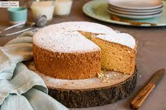
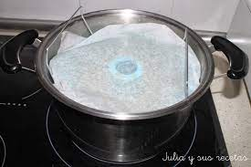
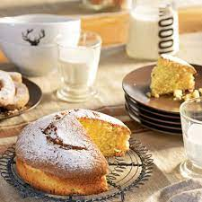
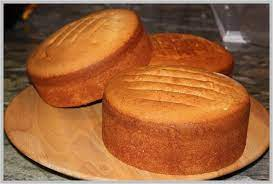

BIZCOCHO
La costumbre se extiende cuando en un viaje visitamos alguna feria y compramos para llevar los famosos panes de pueblo elaborados con huevo, con nata o algunos espolvoreados con azúcar rosa que son una verdadera delicia. Bizcochos mexicanos.Tenemos variedad de bizcochoc esto son.
|  |
Los bizcochos cocidos al vapor.
Los bizcochos cocidos al vapor y los superligeros son muy parecidos en cuanto a sus ingredientes, siendo su mayor diferenciación la manera en la que los cocinamos. Los superligeros se cocinan en horno.
|  |
Los superligeros.
Los bizcochos ligeros no llevan mantequilla u otro tipo de grasa, por lo que son más esponjosos, pero a la vez más secos.
Dentro de los bizcochos ligeros, uno de los más usados es el Bizcocho Genovés. Es el bizcocho utilizado para tartas como la San Marcos, y también puede utilizarse para montajes con Mousse.
|  |
Los bizcochos pesados.
Los bizcochos pesados por el contrario llevan una grasa entre sus ingredientes, ya sea mantequilla, aceite de oliva, u otro tipo de grasa.
Este tipo de bizcochos serán menos esponjosos y más compactos, por lo que quizás necesitemos añadir algún impulsador para que suba.
|  |